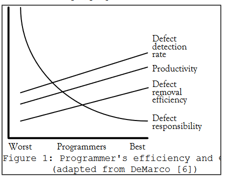

### Software development laws "The hard part isn't the technology — the number one failure of the software industry is building the wrong product." and "If debugging is the process of removing bugs, then programming must be the process of putting them in." - Edsger W. Dijkstra // Name: Jukka Nikki, Identity: Programmer, Since: 6502 // TODO: Get Better as Software Developer
"A major purpose of education is to cultivate open-mindedness and intelligence. Defined in terms of the aptitude for acquiring knowledge, intelligence depends upon an alert curiosity. The cultivation of intelligence depends on freedom to exercise curiosity." - Jiddu Krishnamurti
# Becoming developer or: any skill only needs 10 years to master
"I'm not a great programmer; I'm just a good programmer with great habits." - Kent Beck "We are what we repeatedly do. Excellence, then, is not an act, but a habit." - Aristotle "The second half of a man’s life is made up of nothing but the habits he has acquired during the first half." – Feodor Dostoevski
"Learning occurs when you step out of your comfort zone. And yet, many people are hesitant to take this step for fear of making mistakes or revealing their weaknesses."
<img alt="learning and practice zones" src="images/learning_practice_zones.png" width="50%"> "The problem why many people don’t improve, as soon as they have reached a certain level, is that they spend all of their time in their performance zone."
<img alt="Growth Mindset" src="images/growth_mindset.jpg" width="40%"> "Individuals who believe their talents can be developed (through hard work, good strategies, and input from others) have a growth mindset. They tend to achieve more than those with a more fixed mindset (those who believe their talents are innate gifts)."
## Psychological safety <img alt="4 Stages of Psychological Safety" src="images/Stages_of_Psychological_Safety.png" width="40%"> "a condition in which human beings feel (1) included, (2) safe to learn, (3) safe to contribute, and (4) safe to challenge the status quo"
## Dunning-Kruger Effect "After initially gaining new skills very quickly, people tend to view themselves as highly skilled but later they realize they have many faults."
## Levels of competence "and we add: ExtremelyConsciousIncompetence = being very good at something you start something new, and then fall back to ConsciousIncompetence." - wiki.c2.com
## Johari Window <img alt="joharis window" src="images/joharis_window.png" width="50%"> "a technique that helps people better understand their relationship with themselves and others"
## Dual process theory - System 1 operates automatically and quickly, with little or no effort and no sense of voluntary control. - System 2 allocates attention to the effortful mental activities that demand it, including complex computations.
<img alt="flow" src="images/flow.png" width="50%"> "Your mind is clear and you feel like you’re in a natural rhythm where your knowledge, motivation, and concentration magically align."
"All programmers are optimists. Perhaps this modern sorcery especially attracts those who believe in happy endings and fairy godmothers. Perhaps the hundreds of nitty frustrations drive away all but those who habitually focus on the end goal. Perhaps it is merely that computers are young, programmers are younger, and the young are always optimists. But however the selection process works, the result is indisputable: “This time it will surely run” or “I just found the last bug.”" — Fred Brooks
# Software Evolution or: how success kills
## second law of thermodynamics "The second law of thermodynamics, in principle, states that a closed system's disorder cannot be reduced, it can only remain unchanged or increase. A measure of this disorder is entropy. This law also seems plausible for software systems; as a system is modified, its disorder, or entropy, tends to increase. This is known as software entropy."
#### Tesler’s Law of Conservation as Complexity “Every application has an inherent amount of complexity that cannot be removed or hidden. Instead, it must be dealt with, either in product development or in user interaction.” -- "For every 10-percent increase in problem complexity, there is a 100-percent increase in the software solution’s complexity. That’s not a condition to try to change (even though reducing complexity is always desirable); that’s just the way it is." — Robert Glass
## Hoare's Maxim "There are two ways of constructing a software design. One way is to make it so simple that there are obviously no deficiencies. And the other way is to make it so complicated that there are no obvious deficiencies." ## Occam’s Razor “The simplest solution is most likely the right one.”
## Zawinski’s Law “Every program attempts to expand until it can read mail. Those programs which cannot expand are replaced by ones that can.” or: Feature creep "extra features go beyond the basic function of the product and can result in software bloat and over-complication, rather than simple design."
## Lehman's laws "As an evolving program is continually changed, its complexity, reflecting deteriorating structure, increases unless work is done to maintain or reduce it." or: Technical Debt "internal things that you choose not to do now, but which will impede future development if left undone. This includes deferred refactoring."
## Gall’s Law “A complex system that works has evolved from a simple system that worked. A complex system built from scratch won’t work.” Or: KISS principle "simplicity should be a key goal in design, and unnecessary complexity should be avoided."
## ETC Principle "A thing is well designed if it adapts to the people who use it. For code, that means it must adapt by changing. So we believe in the ETC principle: Easier to Change. ETC. That’s it." - Dave Thomas, Andrew Hunt, 2019 or: SOLID this and that .. "By applying these 5 principles that make the SOLID acronym, we get to benefit from a reusable, maintainable, scalable and easy testable codebase." ;)
## Pesticide Paradox “If the same tests are repeated over and over again, eventually the same test cases will no longer find new bugs.” or: why static systems don't heal themselves .. "The system of nature, of which man is a part, tends to be self-balancing, self-adjusting, self-cleansing. Not so with technology." - E.F. Schumacher
## Planning fallacy "The planning fallacy is a term used by psychologists to describe our tendency to underestimate the amount of time it will take to complete a task. Key reasons: 1. Failing to consider how long it's taken us to complete similar tasks in the past 2. Assuming that we won't run into any complications that will cause delays"
# Business Value or for what user pays to us
## Watsons Dirty little secret "The nature of the beast is that software requirements rarely change; what changes is our awareness of them, and our grasp of their implications. The dirty little secret in the software industry is that at the outset of every project, we don’t really know what we’re doing."
## Humphrey’s Law “For a new software system, the requirements will not be completely known until after the users have used it.” or: as Rumsfeld says "there are also unknown unknowns — the ones we don't know we don't know." or is it just Planning Fallacy here? "Each release represents our next “best laid plan”, which survives right up until it makes contact with the customer."
## The 90-90 Rule “The first 90 percent of the code accounts for the first 90 percent of the development time. The remaining 10 percent of the code accounts for the other 90 percent of the development time.” or: definition of almost done, #noEstimates "estimating is fundamentally guessing, yet these guesses are taken as promises"
## Pareto principle, 20/80 rule "For many events, roughly 80% of the effects come from 20% of the causes" aka "80% of users only use 20% of application’s features" aka Muda on Lean / Feature creep "features not often used by customers are waste"
## One Skull Rule "The most valuable asset in the software industry is the synthesis of programming skill and deep context in the business problem domain, in one skull." or: 10x superpower which is hardly given value "Domain Knowledge: One of the most under-appreciated skills that programmers have; and a key reason why programmers aren't commodities." - wiki.c2.com
## Jukkas Great Advice - Programming is just one skill you need - Become so fluent on programming that you have capacity to learn "The hard stuff" - Being efficient all the time is not only impossible, but it's also damaging you - Understanding users needs is not "somebody elses" job, but everyones, including you - Domain knowledge does not only elevate your value, but it makes programming meaningless
# Deadlines and deathmarches
## Lister’s Law “People under time pressure don’t think faster” direct result of Planning Fallacy and Optimism Bias "when planning future work we do not accurately recall the risks or the effort in completing similar work in the past."
Hofstadter is for agile, Parkinson for plan driven ## Hofstadter’s Law “It always takes longer than you expect, even when you account for Hofstadter’s Law.” ## Parkinson’s Law “Work expands so as to fill the time available for its completion”
## Brooks’ law “Adding manpower to a late project makes it later.” or "What one programmer can do in one month, two programmers can do in two months." or "nine women can't make a baby in one month"
## Dunning–Kruger Effect "People who lack the most knowledge on a topic also lack the ability to recognize their own mistakes and errors, making them exceptionally confident and biased self-evaluators. They are also unable to fairly judge other people’s performance." but cognitive error happens on other end of spectrum also "Meanwhile, true experts often underrate themselves -- they’re so knowledgable on the subject, they can see how much they don’t know."
## Putt’s Law “Technology is dominated by two types of people: those who understand what they do not manage and those who manage what they do not understand.” or: blame-game is not a solution "Blaming programmers has been the prevailing approach for a half century of software development: It has not solved the problem yet, so it is time to look in different directions." – Boris Beizer
# Random additions "The function of good software is to make the complex appear to be simple." – Grady Booch "Programming is not about typing, it's about thinking." - Rich Hickey
## [10x Programmer Myth](https://insights.sei.cmu.edu/blog/programmer-moneyball-challenging-the-myth-of-individual-programmer-productivity/) "most of the differences resulted from a few very low performances, rather than exceptional high performance. Second, there are very few programmers at the extremes. Third, the same programmers were seldom best or worst. While average performance differs between programmers, only half the variation in program-development effort can be attributed to inherent programmer skill; the other half is within the individual developer's day-to-day variation. " - Bill Nichols, 2020
#### [Net Negative Producing Programmer]()  "Taking a poor performer off the team can often be more productive than adding a good one. In a team of ten, expect as many as three people to have a defect rate high enough to make them NNPPs." - Gordon Schulmeyer
## Jokes "If you give someone a program, you will frustrate them for a day; if you teach them how to program, you will frustrate them for a lifetime." — Roedy Green https://github.com/Droogans/unmaintainable-code
## Goodhart’s Law “Any observed statistical regularity will tend to collapse once pressure is placed upon it for control purposes.”
## Lubarsky’s law “There’s always one more bug.” and why open source has less? ## Linus’ law “Given enough eyeballs, all bugs are shallow.”
## Flon’s Law "There is not now, nor will there ever be, a programming language in which it is the least bit difficult to write bad code." but there's reason to try to write good code ## Eagleson’s law “Any code of your own that you haven’t looked at for six or more months might as well have been written by someone else.”